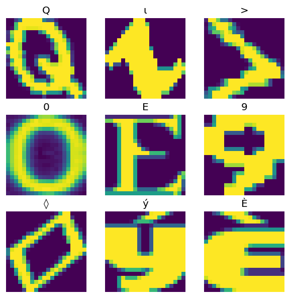

Carga de múltiples archivos CSV con make_csv_dataset — 6:59 min
Última modificación: Mayo 6, 2022 | YouTube
Importación de librerías
[1]:
import os
os.environ["TF_CPP_MIN_LOG_LEVEL"] = "2"
import tensorflow as tf
Descarga de los archivos
[9]:
fonts_zip = tf.keras.utils.get_file(
"fonts.zip",
"https://archive.ics.uci.edu/ml/machine-learning-databases/00417/fonts.zip",
cache_dir=".",
cache_subdir="/tmp/fonts",
extract=True,
)
Downloading data from https://archive.ics.uci.edu/ml/machine-learning-databases/00417/fonts.zip
160317440/160313983 [==============================] - 7s 0us/step
160325632/160313983 [==============================] - 7s 0us/step
[10]:
import pathlib
font_csvs = sorted(str(p) for p in pathlib.Path("/tmp/fonts").glob("*.csv"))
font_csvs[:10]
[10]:
['/tmp/fonts/AGENCY.csv',
'/tmp/fonts/ARIAL.csv',
'/tmp/fonts/BAITI.csv',
'/tmp/fonts/BANKGOTHIC.csv',
'/tmp/fonts/BASKERVILLE.csv',
'/tmp/fonts/BAUHAUS.csv',
'/tmp/fonts/BELL.csv',
'/tmp/fonts/BERLIN.csv',
'/tmp/fonts/BERNARD.csv',
'/tmp/fonts/BITSTREAMVERA.csv']
[12]:
len(font_csvs)
[12]:
153
Creación del CSV
[11]:
fonts_ds = tf.data.experimental.make_csv_dataset(
file_pattern="/tmp/fonts/*.csv",
batch_size=10,
num_epochs=1,
num_parallel_reads=20,
shuffle_buffer_size=10000,
)
Recorrido del archivo
[13]:
for features in fonts_ds.take(1):
for i, (name, value) in enumerate(features.items()):
if i > 15:
break
print(f"{name:20s}: {value}")
print("...")
print(f"[total: {len(features)} features]")
font : [b'MONOTXT' b'VIN' b'SITKA' b'GOUDY' b'MONOTXT' b'RAVIE' b'MONOTYPE'
b'SITKA' b'GUNPLAY' b'VINETA']
fontVariant : [b'MONOTXT' b'scanned' b'SITKA TEXT' b'GOUDY STOUT' b'MONOTXT' b'RAVIE'
b'MONOTYPE CORSIVA' b'SITKA TEXT' b'GUNPLAY' b'VINETA BT']
m_label : [227 49 416 88 243 221 944 323 89 51]
strength : [0.4 0.4 0.4 0.4 0.4 0.4 0.4 0.4 0.4 0.4]
italic : [0 0 0 1 0 1 0 0 1 0]
orientation : [0. 0. 0. 0. 0. 0. 0. 0. 0. 0.]
m_top : [33 0 53 38 29 21 38 37 32 36]
m_left : [28 0 23 25 28 32 25 23 35 23]
originalH : [45 61 45 51 49 71 44 60 47 54]
originalW : [33 6 50 90 33 65 28 45 40 55]
h : [20 20 20 20 20 20 20 20 20 20]
w : [20 20 20 20 20 20 20 20 20 20]
r0c0 : [ 1 37 1 1 1 1 1 1 1 1]
r0c1 : [ 1 37 1 1 1 1 1 1 182 1]
r0c2 : [ 1 37 1 1 1 1 1 1 255 7]
r0c3 : [ 15 86 1 1 1 1 1 1 255 101]
...
[total: 412 features]
Empaquetamiento de pixels
[14]:
import re
def make_images(features):
image = [None] * 400
new_feats = {}
for name, value in features.items():
match = re.match("r(\d+)c(\d+)", name)
if match:
image[int(match.group(1)) * 20 + int(match.group(2))] = value
else:
new_feats[name] = value
image = tf.stack(image, axis=0)
image = tf.reshape(image, [20, 20, -1])
new_feats["image"] = image
return new_feats
Aplicación de la función a cada batch
[15]:
fonts_image_ds = fonts_ds.map(make_images)
for features in fonts_image_ds.take(1):
break
Gráficos
[16]:
from matplotlib import pyplot as plt
plt.figure(figsize=(6, 6), dpi=120)
for n in range(9):
plt.subplot(3, 3, n + 1)
plt.imshow(features["image"][..., n])
plt.title(chr(features["m_label"][n]))
plt.axis("off")
